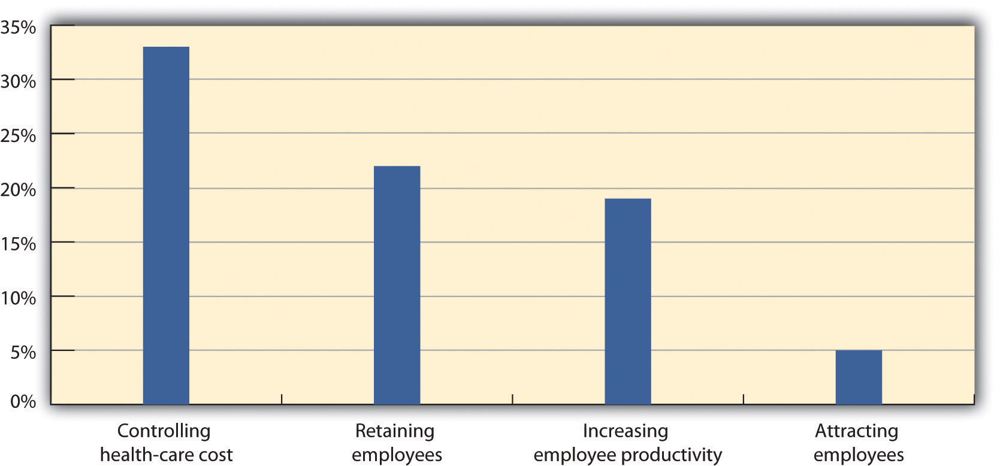
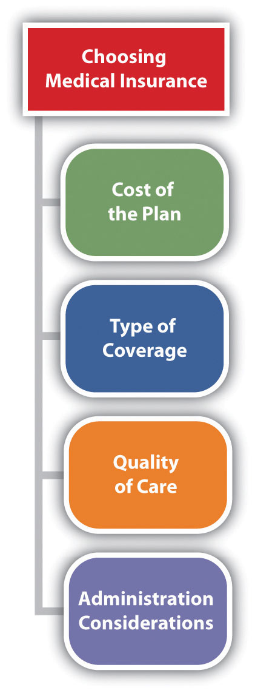
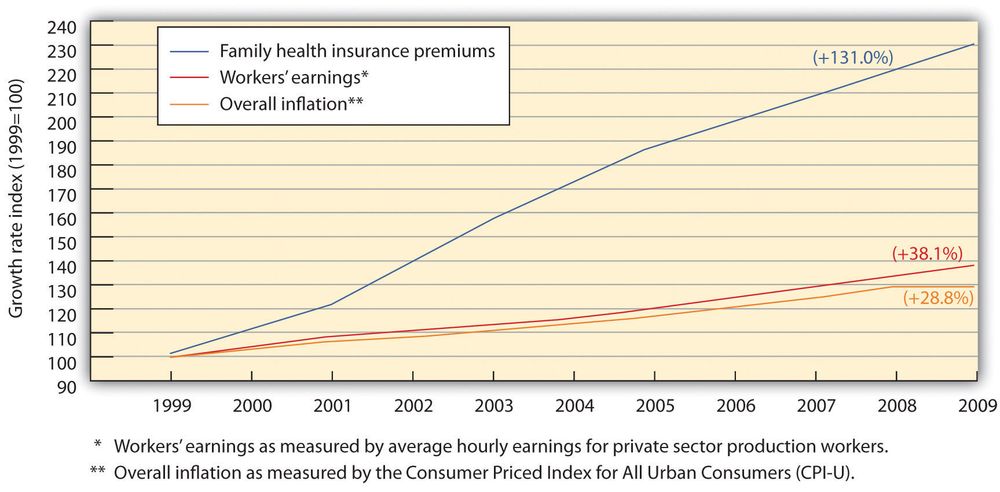

As you already know, there is more to a compensation package than just pay. There are many other aspects to the creation of a good compensation package, including not only pay but incentive pay and other types of compensation. First, we will discuss benefits that are mandated by the federal government, and then we will discuss types of voluntary benefits, including both incentive pay and other types of compensation.
The Social Security Act of 1935 requires employers to withdraw funds from workers’ paychecks to pay for retirement benefits. This is called a payroll tax. Please note that all organizations are legally compelled to offer this benefit. After several revisions, we now call this OASDHIA federally mandated retirement program that stands for Old Age, Survivors, Disability, and Health Insurance Program and includes Social Security and Medicare. or the Old Age, Survivors, Disability, and Health Insurance Program. To be insured, employees must work forty quarters, with a minimum of $1,000 earned per quarter. Once this money is put aside, anyone born after 1960 will receive benefits at 67. The OASDHI tax in 2011 is 4.2 percent on earnings for employees, up to $106,800 and 6.2 percent for the employer up to the same limits. This covers both retirement income as well as medical benefits, called Medicare, once the employee reaches retirement age.
Unemployment insurance is required under the Social Security Act of 1935 and is also called the Federal Unemployment Tax Act (FUTA). This program’s goals include providing some lost income for employees during involuntary unemployment, helping workers find a new job, incentivizing employers to continue employment, and developing worker skills if they are laid off. The majority of this plan is funded by employers’ payroll taxes, which account for .8 percent per employee. The rate is actually 6.2 percent of compensation, but employers are allowed a tax credit for these payments, which results in the net .8 percent. With this benefit, employees receive unemployment benefits and/or job training when they are laid off or let go from a current job. However, employees would be ineligible to receive these benefits if they quit their job, as it must be involuntary. Just like Social Security, this payroll tax on employers is required.
Some employers also offer workers’ compensation benefits. If an employee is hurt on the job, he or she would receive certain benefits, such as a percentage of pay. Jobs are classified into risk levels, and obviously the higher the risk level, the higher the cost of insurance. This is not a federally mandated program, but for some occupations in some states, it may be a requirement.
While the government does not require companies to provide health-care and medical benefits to employees, the Consolidated Omnibus Budget Reconciliation Act (COBRA)A law enacted in 1985 that requires companies to allow employees to extend their group health-care coverage for up to thirty-six months. requires companies to allow employees to extend their group coverage for up to thirty-six months. The restrictions for this plan include the requirement of a qualifying event that would mean a loss of benefits, such as termination or reduction in hours. For example, if an employee works forty hours a week with medical insurance, but the schedule is reduced to twenty hours, no longer qualifying him or her for benefits, COBRA would be an option.
As we discussed earlier, there are several types of incentive pay systems that can be tied directly to business objectives and the employees’ ability to help the company meet those objectives. They include commissions, bonuses, profit sharing, stock options, team pay, and merit pay.
Commissions are usually calculated on the basis of a percentage and earned based on the achievement of specific targets that have been agreed upon by the employee and employer. For example, many salespeople receive commissions from each item sold. Many commission incentive plans require employees to meet a minimum level of sales, who then are paid a comission on each sale beyond the minimum. A straight commission planAn incentive plan in which the employee receives no base pay and the entire pay is based on meeting sales goals. is one in which the employee receives no base pay and entire pay is based on meeting sales goals. Many plans, however, include a base payThe minimum pay an employee receives. and commission for each sale. Base pay is the guaranteed salary the employee earns.
Several types of bonuses can be given to employees as incentive pay. Meeting certain company goals or successfully completing a project or other objectives can be tied to a bonus, which is a one-time payment to an employee. A spot bonus is an unplanned bonus given to an employee for meeting a certain objective. These types of bonuses do not always have to be money; they can be other forms such as a gift certificate or trip. Fifty-eight percent of WorldatWork membersWorldatWork, “Spot Bonus Survey,” July 2000, accessed July 23, 2011, http://www.worldatwork.org/waw/research/html/spotbonus-home.html. said that they provide spot bonuses to employees for special recognition above and beyond work performance.
Some organizations choose to reward employees financially when the organization as a whole performs well, through the use of profit sharing as an incentive. For example, if an organization has a profit-sharing program of 2 percent for employees, the employees would earn 2 percent of the overall profit of the company. As you have guessed, this can be an excellent incentive for employees to both work as a team and also monitor their own personal performance so as not to let down the team. For example, in 2011, US automaker General Motors gave one of its highest profit-sharing payouts ever. Forty-five thousand employees received $189 million in a profit-sharing bonus, which equaled about $4,200 per person.Nick Bunkley, “GM Workers to Get $189 Million in Profit Sharing,” New York Times, February 14, 2011, accessed February 21, 2011, http://www.nytimes.com/2011/02/15/business/15auto.html?_r=2&ref=business. While profit sharing can be a great incentive, it can also be a large expense that should be carefully considered.
Employee ownership of the organization is similar to profit sharing but with a few key differences. In this type of plan, employees are granted stock optionsA type of incentive that allows the employees to buy stock at a fixed price., which allow the employees to buy stock at a fixed price. Then if the stock goes up in value, the employee earns the difference between what he or she paid and the value of the stock. With this type of incentive, employees are encouraged to act in the best interest of the organization. Some plans, called employee stock ownership plansA type of incentive that gives employees stock (ownership) in the organization., are different from stock options, in that in these plans the employee is given stock as reward for performance.
In a smaller organization, team pay or group incentives can be popular. In this type of plan, if the group meets a specified goal, such as the increase of sales by 10 percent, the entire group receives a reward, which can consist of additional pay or bonus. Please note that this is different from individualized bonuses, discussed earlier, since the incentive is a reward for the group as opposed for the individual.
Merit pay is a pay program that links pay to how well the employee performs within the job, and it is normally tied to performance appraisals. Performance appraisals are discussed further in Chapter 10 "Managing Employee Performance". Merit base is normally an annual pay increase tied to performance. The problem with merit pay is that it may only be received once per year, limiting incentive flexibility. To make merit pay work, performance guidelines should be predetermined. Some organizations offer cost of living annual increases (COLAs),A pay increase not tied to merit but given to employees as an annual inflationary increase. which is not tied to merit but is given to employees as an annual inflationary increase.
While the cost of health insurance premiums may be going up for most Americans, these premiums do not hit the individual employee’s pocketbook at Microsoft. Microsoft, based in Redmond, Washington, finds itself once again on the Fortune 500 Best Companies to Work For list in several areas, including paying for 100 percent of employees’ health-care premiums.“100 Best Companies to Work For,” Fortune, accessed July 21, 2011, http://money.cnn.com/magazines/fortune/bestcompanies/2010/snapshots/51.html. In addition to cutting this cost for employees, Microsoft also offers domestic partner benefits, one of the first Fortune 500 companies to do so. In 2005, Microsoft also began to offer partial coverage for transgender surgery to its existing health-care coverage, which earned Microsoft the highest attainable score by the Human Rights Campaign (HRC) Equality Index.Gay, Lesbian, Bisexual, and Transgender Employees at Microsoft (GLEAM), Microsoft website, accessed July 21, 2011, http://www.microsoft.com/about/diversity/en/us/programs/ergen/gleam.aspx. Microsoft also promotes fitness and wellness as part of its health-care plan, providing an on-site fitness center and subsidized gym memberships.
According to the Bureau of Labor Statistics, 62 percent of companies in 2010 offered health-care benefits to employees.Bureau of Labor Statistics, “Employee Benefits Survey,” 2010, accessed July 23, 2011, http://www.bls.gov/ncs/ebs/benefits/2010/ownership/private/table01a.htm. The yearly cost for employee medical insurance averages $9,552, according to the 2009 Towers Perrin survey.Towers Watson, “2009 Health Care Cost Survey Reveals High-Performing Companies Gain Health Dividend,” With such a significant cost to companies, it is up to HR managers to contain these costs, while not negatively affecting employee motivation. Medical insurance usually includes hospital expenses, surgical expenses, and routine health-care visits. Most insurance plans also allow for wellness visits and other alternative care (e.g., massage and acupuncture) within the plans. Many employers also offer vision and dental care benefits as part of their benefits packages. Disability insurance is also provided by some employers as well. We will discuss each of these in detail next.
One important law to keep in mind regarding medical insurance is the Health Insurance Portability and Accountability Act (HIPAA) of 1996. It provides federal protections for personal health information held by covered entities, such as employers. In other words, employers cannot divulge or share health care information they may have on an employee.
Figure 6.6
As you can see from MetLife’s 9th annual study in 2010, cost containment is an important aspect to health-care plans.
Source: MetLife, “9th Annual Study of Employee Benefits Trends,” 2010, http://www.metlife.com/assets/institutional/services/insights-and-tools/ebts/Employee-Benefits-Trends-Study.pdf (accessed July 23, 2011).
As the HR professional, it will likely be your responsibility to choose the health-care plan that best meets the needs of your employees. Some options include the following:
Figure 6.7 Considerations When Choosing Medical Insurance
When choosing the best type of plan for your organization, the following aspects should be considered:
First, the cost is usually a major consideration for the HR professional. Developing a budget for health-care costs, initiating bids from possible providers, and then negotiating those bids is a key factor in controlling this cost for employers.
Second, asking for employees’ opinions about the type of coverage they would prefer is a way to ensure your plan meets the needs of your employees. Next, consider the quality of care your employees will receive and, finally, how simple will the plan be for your HR department to administer. For example, many HMO plans offer fully automated and online services for employees, making them easy to administer.
Disability insuranceA type of insurance that provides income to individuals (usually a portion of their salary) should they be injured or need long-term or short-term care resulting from an illness. provides income to individuals (usually a portion of their salary) should they be injured or need long-term care resulting from an illness. Short-term disability insurance (STD) provides benefits to someone if they are unable to work for six months or less, while long-term disability insurance (LTD) covers the employee for a longer period of time. Normally, disability insurance provides income to the employee that is 60–80 percent of their normal salary.
Figure 6.8
One of the biggest challenges in health-care benefits planning is to manage the growing cost of health insurance premiums for employees while still managing cost containment for the organization.
Source: Economic Policy Institute, “The State of Working America: Health Premiums,” http://stateofworkingamerica.org/charts/growth-rate-of-premiums-earnings-and-inflation/ (accessed July 23, 2011).
As the scenery of the workforce has changed, benefits have changed, too. One such recent change is the movement of employee pension plans to 401(k) plans. While some organizations still offer pension plans, such plans are far more rare. A pension plan is a set dollar amount an employee will receive when they retire from their organization. This type of plan was popular when most people worked their entire life at the same company. However, many pension plans have gone bankrupt, and the United States has an agency to protect people from losing pension benefits. The Pension Benefit Guaranty Corporation (PBGC)A US government agency created by the Employee Retirement Income Security Act (ERISA) to protect pension benefits in private sector pension plans. was created by the Employee Retirement Income Security Act (ERISA) to protect pension benefits in private sector pension plans. If a pension plan ends or isn’t able to pay all benefits, PBGC’s insurance program pays the benefit that should have been provided. Financing for this plan comes from insurance premiums paid by the companies whose plans PBGC protects.
As more mobility in the workplace has occurred, most organizations no longer offer pension plans, but instead, they offer 401(k) plans. While a pension plan can motivate employee loyalty, 401(k) plans are far more popular. According to the US Bureau of Labor Statistics, employer-provided retirement plans, such as 401(k) plans, were available to 74 percent of all full-time workers in the United States,US Bureau of Labor Statistics, “Employee Benefits in the United States: March 2010,” news release, July 27, 2010, accessed September 12, 2011, http://www.bls.gov/ncs/ebs/sp/ebnr0016.txt. while 39 percent of part-time workers had access to retirement benefits.
A 401(k) plan is a plan set up by the organization in which employees directly deposit money from their paycheck. The funds are tax deferred for the employee until retirement. If an employee leaves the job, their 401(k) plan goes with them. As an extra incentive, many organizations offer to match what the employee puts into the plan, usually based on a percentage. For example, an employee can sign up to contribute 5 percent of salary into a 401(k) plan, and the company will contribute the same amount. Most companies require a vesting periodFor 401(k) plans, a certain time period before the employer will match the employee funds contributed.—that is, a certain time period, such as a year, before the employer will match the funds contributed.
Usually, 401(k) plans are easy to administer, after the initial setup has occurred. If the employer is matching employee contributions, the expense of such a plan can be great, but it also increases employee retention. Some considerations when choosing a 401(k) plan are as follows:
It is first important to make sure the vendor you are considering for administration of your 401(k) plan has a positive reputation and also provides ease of access for your employees. For example, most 401(k) plans allow employees to change their address online and move investments from a stock to a bond. Twenty-four-hour access has become the expectation of most employees, and as a result, this is a major consideration before choosing a plan. Most 401(k) plans charge a fee to manage the investments of your employees. The management fees can vary greatly, so receiving a number of bids and comparing these fees is important to ensure your employees are getting the best deal.
It is important to mention the Employee Retirement Income Security Act (ERISA) here, as this relates directly to administration of your 401(k) plan. First, ERISA does not require employers to offer a pension or 401(k) plan, but for those who do, it requires them to meet certain standards when administering this type of plan. Some of these standards include the following:
Time off is a benefit we should address, since this type of benefit varies greatly, especially in other parts of the world. French companies, for example, are mandated by law to provide five weeks of paid vacation time to employees.Rebecca Leung, “France: Less Work, More Time Off,” CBS News, February 11, 2009, accessed July 23, 2011, http://www.cbsnews.com/stories/2005/06/27/60II/main704571.shtml. In the United States, the number of days off provided is a major budget item worth considering. Here are the general types of time off:
Many companies offer a set number of paid holidays, such as New Year’s Day, Memorial Day, Christmas, Independence Day, and Thanksgiving.
The number of sick leave days can vary greatly among employers. The average in the United States is 8.4 paid sick days offered to employees per year.HRM Guide, “Sick Day Entitlement Survey,” accessed February 21, 2011, http://www.hrmguide.com/health/sick-entitlement.htm.
With full-time employment, many organizations also offer paid vacation to employees, and it is generally expected as part of the compensation package. According to a survey performed by Salary.com, the average number of paid vacation days in the United States is nine days for one year of service, fourteen days for five years of service, and seventeen days for ten years of service to the organization.Jessica Yang, “Paid Time Off from Work Survey,” Salary.com, accessed September 15, 2011, http://www.salary.com/Articles/ArticleDetail.asp?part=par088.
Organizations vary greatly in how vacation time is accrued. Some organizations give one hour for a certain number of days worked, while others require a waiting period before earning any paid time off (PTO). In addition, some organizations allow their employees to carry over unused vacation time from one year to the next, while other employees must use their vacation every year or risk losing it.
One option is to provide a set number of days off, which can be used for vacation time, holidays, and/or sick leave.
To promote longevity, some organizations offer paid (or for example, 60 percent of salary paid) sabbaticals. For example, after five years of employment, the employee may take a paid sabbatical for one month.
When creating your compensation plan, of course the ability to recruit and retain should be an important factor. But also, consideration of your workforce needs is crucial to any successful compensation plan. The first step in development of a plan is to ask the employees what they care about. Some employees would rather receive more pay with fewer benefits or better benefits with fewer days off. Surveying the employees allows you, as the HR professional, to better understand the needs of your specific workforce. Once you have developed your plan, understand that it may change to best meet the needs of your business as it changes over time.
Once the plan is developed, communicating the plan with your employees is also essential. Inform your employees via an HR blog, e-mails, and traditional methods such as face to face. Your employees might not always be aware of the benefits cost to the company, so making sure they know is your responsibility. For example, if you pay for 80 percent of the medical insurance premiums, let your employees know. This type of communication can go a long way to allowing the employees to see their value to you within the organization.
Lynn Cameron, managing partner of TechEdge, discusses compensation strategies.